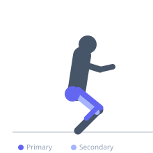
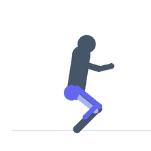

Exercise guide / Tuck Jump
Tuck Jump
The tuck jump is a vertical plyometric exercise in which the athlete jumps as high as possible and pulls both knees toward the chest before landing. The knee tuck shortens the moment of inertia during flight and demands greater hip flexor activation at the top of the jump compared to a standard vertical jump. It is used to develop explosive lower body power, hip flexor strength in the air, and landing mechanics, and is a common conditioning exercise in gymnastic and athletic training.
Primary muscles
rectus femoris
gluteus maximus
gastrocnemius medial
Secondary muscles
iliacus
psoas major
biceps femoris long head
Stabilizers
transverse abdominis
gluteus medius
Equipment
No Equipment (Bodyweight)


Starting position
- Stand with feet shoulder-width apart. Arms relaxed at sides.
Setup
- Ensure adequate overhead clearance for the full jump.
Steps
- Step 1: Stand with feet shoulder-width apart.
- Step 2: Dip into a quarter squat, swinging arms back.
- Step 3: Explode upward as high as possible.
- Step 4: At the peak of the jump, pull both knees toward the chest as high as possible.
- Step 5: Extend the legs to land softly with bent hips and knees.
Coaching cues
- Jump first — then tuck
- Pull the knees to the chest at the peak
- Land quietly with bent knees
Breathing
- Exhale sharply at takeoff. Breathe during rest between reps.
Range of motion
- Maximum vertical height, then maximum knee tuck. Extend to land.
Tempo
- Maximum effort. 5–10 reps per set for conditioning; 3–5 reps for power focus.
Common mistakes
- Pulling the knees without achieving maximum jump height first
- Landing with straight legs
- Not fully extending at takeoff before the tuck
Safety
- Ensure adequate overhead space.
- Land softly — knee and hip flexion on landing.
Training
- power: 5–10 reps
- endurance: 10–20 reps
- power: 3–5 sets
- endurance: 3–5 sets
- Rest: {'power': 120, 'endurance': 60}